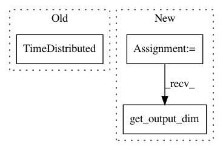

50946749d3e774573545ae684f694df6338c567b,allennlp/models/coreference_resolution/coref_v2.py,CoreferenceResolverV2,__init__,#CoreferenceResolverV2#Any#Any#Any#Any#Any#Any#Any#Any#Any#Any#Any#Any#,64
Before Change
TimeDistributed(torch.nn.Linear(mention_feedforward.get_output_dim(), 1)))
self._mention_pruner = SpanPruner(feedforward_scorer)
self._antecedent_scorer = TimeDistributed(torch.nn.Linear(antecedent_feedforward.get_output_dim(), 1))
self._head_scorer = TimeDistributed(torch.nn.Linear(context_layer.get_output_dim(), 1))
// 10 possible distance buckets.
self._num_distance_buckets = 10
self._distance_embedding = Embedding(self._num_distance_buckets, feature_size)
After Change
num_width_embeddings=max_span_width,
span_width_embedding_dim=feature_size,
bucket_widths=False)
self._attentive_span_extractor = SelfAttentiveSpanExtractor(input_dim=text_field_embedder.get_output_dim())
// 10 possible distance buckets.
self._num_distance_buckets = 10
In pattern: SUPERPATTERN
Frequency: 3
Non-data size: 3
Instances
Project Name: allenai/allennlp
Commit Name: 50946749d3e774573545ae684f694df6338c567b
Time: 2018-01-31
Author: markn@allenai.org
File Name: allennlp/models/coreference_resolution/coref_v2.py
Class Name: CoreferenceResolverV2
Method Name: __init__
Project Name: allenai/allennlp
Commit Name: 700abc65fd2172a2c6809dd9b72cf50fc2407772
Time: 2020-02-03
Author: mattg@allenai.org
File Name: allennlp/models/decomposable_attention.py
Class Name: DecomposableAttention
Method Name: __init__
Project Name: allenai/allennlp
Commit Name: 7915c28132fc61d1eb7e16aedcd653c9622d46be
Time: 2018-02-05
Author: markn@allenai.org
File Name: allennlp/models/coreference_resolution/coref.py
Class Name: CoreferenceResolver
Method Name: __init__